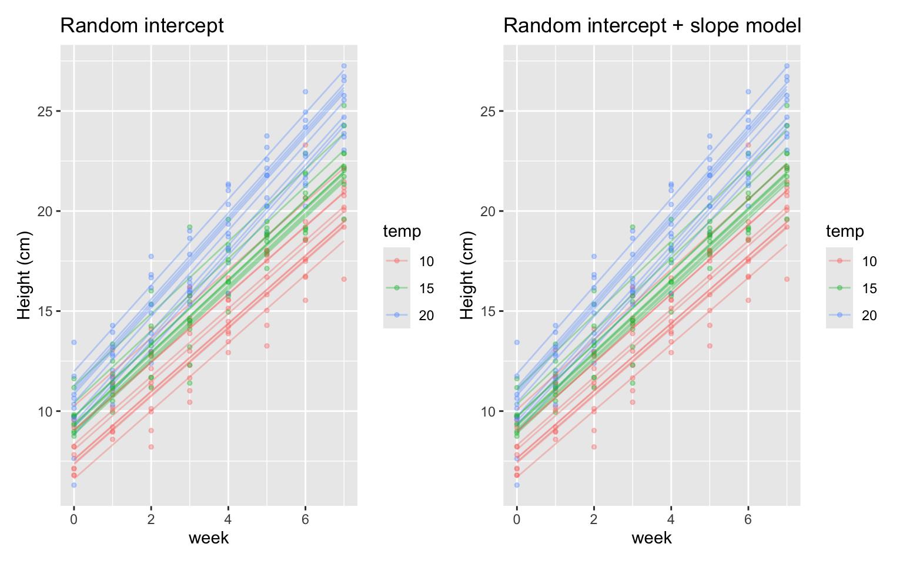

So far in BIO144 we mostly used models where each observation is assumed independent:
linear models (lm())
generalized linear models (glm()), e.g. Poisson and binomial.
By independent we mean that the value of one observation does not give us any information about the value of another observation.
But many biological datasets violate independence because observations come in groups:
repeated measures on the same individual (before/after, time series, multiple tissues)
multiple individuals from the same plot / site / stream / lake / cage / family
students within classes, patients within hospitals, samples within batches
In these cases, treating all rows as independent often leads to false confidence (too-small standard errors, too-small p-values). Mixed models are one standard way to handle this.
Important
Core idea A mixed model extends regression by adding random effects that represent grouping structure (clusters) in the data.
fixed effects: effects you want to estimate explicitly (treatments, temperature, time, …)
random effects: variation among groups (individuals, sites, years, …) that induces correlation within groups
Why not just average?
A common workaround is to average repeated measurements to a single value per group and then use lm().
Sometimes this is OK — but often it throws away information.
Reasons not to average include:
Imbalanced sampling (groups have different numbers of observations): averaging changes the weighting.
Which average? (mean, median, mode): different choices answer different questions.
False confidence: pretending “n rows” are independent can make uncertainty look too small.
You may want to study variation among groups (some individuals respond more strongly than others).
“Sharing information” across groups: mixed models partially pool group estimates toward the overall mean.
Keeping information: you can use all observations without collapsing the design.
Note
A mixed model gives you a principled compromise between:
analysing each observation as a independent one, and
averaging everything (too coarse).
This is sometimes called partial pooling.
The problem: non-independence and pseudoreplication
Imagine we measure the same individual multiple times.
If we fit a simple linear model, the residuals are assumed independent:
\[\varepsilon_i \sim \text{Normal}(0, \sigma^2), \quad \text{independent across } i\]
But repeated measures induce correlation:
measurements from the same individual tend to be more similar
so residuals are not independent
This is one common form of pseudoreplication: treating repeated measurements as if they were separate independent replicates.
Random intercept models
Random intercept idea
Suppose we measure a response \(y\) (e.g. growth) for individuals \(j\) at observations \(i\). And that we measure each individual more than once. And that we have some treatment, such as temperature \(x\).
This means that our data have a grouping structure: observations are grouped by individual. If we want to calculate the mean growth, we should account for this grouping.
Rows: 50 Columns: 3
── Column specification ────────────────────────────────────────────────────────
Delimiter: ","
chr (1): individual
dbl (2): temperature, growth
ℹ Use `spec()` to retrieve the full column specification for this data.
ℹ Specify the column types or set `show_col_types = FALSE` to quiet this message.
In this data we have two sources of variation in growth:
fixed effect of temperature (same for all individuals)
random effect of individual (different baseline growth for each individual)
A fixed effect is something we want to estimate explicitly (e.g. how growth changes with temperature). Fixed effects are variables in which the values have specific meaning (e.g. temperature = 5°C).
A random effect is something that varies among groups (individuals here), but where we are not interested in the specific values for each group. Instead, we want to estimate the amount of variation among groups. Random effects are variables where the specific values are not of interest, but rather the variation among them (e.g. individual identity). I.e., the value “Ind01” has no specific meaning; we just want to know how much individuals differ from each other on average. That value could be anything.
A random effect is often containing levels that are considered a random sample from a larger population. We did not, for example, choose specific individuals for a reason; they are just a sample of all possible individuals.
An appropriate model for this data is a random-intercept mixed model. It is a model in which each group (individual) has its own intercept (baseline), but the intercepts are assumed to come from a common distribution.
\(x_{ij}\) is the explanatory variable for observation \(i\) in group \(j\). Also called a fixed effect.
\(b_{0j}\) is a random intercept for group \(j\), typically \(b_{0j} \sim \text{Normal}(0,\sigma_b^2)\)
\(\varepsilon_{ij}\) is residual error, \(\varepsilon_{ij} \sim \text{Normal}(0,\sigma^2)\)
Interpretation:
each group gets its own intercept (baseline), but
those intercepts are assumed to come from a common distribution
Random intercept syntax in R
To make a mixed model in R we can no longer use lm() or glm(). Instead, we use the lmer() function from the lme4 package.
In the lmer function we have to specify the random effects in a special way. For example, a random-intercept model for y with fixed effect x and random intercept by group is specified as:
y ~ x + (1| group)
Read it as: “a model for y with fixed effect x and a random intercept by group”.
Random slope models
Sometimes groups differ not only in baseline level, but also in how they respond to an explanatory variable.
Here each group has its own intercept and its own slope, and these can be correlated.
Caution
Random slopes are powerful but can be hard to estimate with small datasets. If the model struggles to fit (singular fit warnings), consider simplifying.
Nested and crossed random effects
Nested
Nested means one grouping factor is contained within another.
Example: measurements within plants within plots:
y ~ treatment + (1| plot/plant)
This expands to (1 | plot) + (1 | plot:plant).
Crossed
Crossed means groups are not nested.
Example: repeated measures with multiple observers (each observer measures many individuals; each individual is measured by many observers):
y ~ x + (1| individual) + (1| observer)
Hands-on example: plant growth with repeated measures
Biological story
You are studying how temperature affects plant growth.
30 plants are grown at one of three temperatures: 10°C, 15°C, 20°C.
Each plant is measured weekly for 8 weeks.
Response: plant height (cm).
Because we repeatedly measure the same plant, the observations are not independent. We will compare:
a naive linear model (wrong independence assumption),
Rows: 240 Columns: 4
── Column specification ────────────────────────────────────────────────────────
Delimiter: ","
chr (1): plant_id
dbl (3): temp, week, height
ℹ Use `spec()` to retrieve the full column specification for this data.
ℹ Specify the column types or set `show_col_types = FALSE` to quiet this message.
We can see data from each individual plant because it is connected by a line. We also see that plants at higher temperature tend to be taller. And we see that plants differ in their baseline height (week 0).
There are two challenges here: 1. We have repeated measures on the same plants (non-independence). 2. We have variation among plants in baseline height.
A mixed model can handle both of these.
Wrong model: treat all rows as independent
m_lm <-lm(height ~ week * temp, data = dat)anova(m_lm)
This model pretends there are \(30 \times 8 = 240\) independent data points. But most of that information is repeated measures on the same plants.
We can see that this is pseudoreplication because there are many more residual degrees of freedom (236) than plants (30). This is a classic sign of pseudoreplication. We really cannot trust the p-values or confidence intervals from this model.
Mixed model: random intercept for plant
Now let’s fit a mixed model with plant identity as a random effect:
Type III Analysis of Variance Table with Satterthwaite's method
Sum Sq Mean Sq NumDF DenDF F value Pr(>F)
week 4478.8 4478.8 1 207.00 3264.1929 < 2.2e-16 ***
temp 21.6 10.8 2 46.37 7.8666 0.001144 **
week:temp 46.9 23.4 2 207.00 17.0806 1.362e-07 ***
---
Signif. codes: 0 '***' 0.001 '**' 0.01 '*' 0.05 '.' 0.1 ' ' 1
In the anova table, note that there are no degrees of freedom and no p-values for fixed effects. This is because calculating these in mixed models is complicated and there are multiple methods. We will look at this more later in this chapter.
Interpretation:
fixed effects describe the average relationship between height, week, and temperature
the random intercept captures baseline differences among plants
model checking
Mixed-model diagnostics (i.e., model checking) can be more involved than lm(), but you can still start with:
residual vs fitted plot (nonlinearity / heteroscedasticity)
normal Q–Q of residuals (approximate)
check random effect estimates for extreme outliers
Don’t over-interpret p-values
In mixed models, inference depends on how you handle degrees of freedom and uncertainty. In BIO144, focus on: - correct model structure (what must be random?) - effect sizes and uncertainty (CIs) - sensible plots and biological interpretation
Extension: random slopes for week
If you believe plants differ in growth rate (not only baseline), add a random slope:
There is little evidence that adding random slopes improves the model here (p = 0.77). But in other datasets it might.
Note
This likelihood ratio test compares nested models. It is widely used, but has subtleties for random effects. In BIO144 you can treat it as a reasonable practical tool, while noting that “testing random effects” is an advanced topic.
Visualising fitted values
We can visualise the fitted values from both mixed models:

There is not much difference between the two models here, but in other datasets random slopes can make a big difference.
Significance testing for fixed effects
Calculating p-values for fixed effects in mixed models is complicated, and there are multiple methods (Satterthwaite, Kenward-Roger, likelihood ratio tests, bootstrapping, Bayesian credible intervals). It is difficult because the degrees of freedom depend on the random effects structure and the data. There is no clear and objective method to get the degrees of freedom.
Neverthless, we can get p-values for terms using the lmerTest package (optional). This changes the lmer() function to provide p-values using Satterthwaite’s method for degrees of freedom.
Type III Analysis of Variance Table with Satterthwaite's method
Sum Sq Mean Sq NumDF DenDF F value Pr(>F)
week 4478.8 4478.8 1 207.00 3264.1929 < 2.2e-16 ***
temp 21.6 10.8 2 46.37 7.8666 0.001144 **
week:temp 46.9 23.4 2 207.00 17.0806 1.362e-07 ***
---
Signif. codes: 0 '***' 0.001 '**' 0.01 '*' 0.05 '.' 0.1 ' ' 1
Reporting (template)
We modelled plant height as a function of week, temperature, and their interaction using a linear mixed model with plant identity as a random effect.
Height increased with week (fixed effect of week), and plants at higher temperature were taller on average (fixed effect of temperature).
All fixed effects had a p-value < 0.05, calculate using Satterthwaite’s method for degrees of freedom (lmerTest package).
Including plant as a random effect accounted for non-independence due to repeated measures.
Review
Mixed models are used when observations are grouped (non-independent).
They combine fixed effects (average relationships) with random effects (group-to-group variation).
Random intercepts model different baselines among groups; random slopes allow different responses.
Nested and crossed random effects reflect study design.
Mixed models let you keep all observations while avoiding pseudoreplication and false confidence.
Further reading (optional): mixed models
In this course, there is only a short introduction to mixed (multilevel) models. Students who are curious and would like to explore this topic further (purely for their own interest) may find the following resources useful. Material from these resources will not be examined in the final exam, unless it is also already present in the course book.
McElreath, R. – Statistical Rethinking This book offers an excellent conceptual introduction to hierarchical (mixed) models, with a strong focus on understanding why they are useful. It introduces ideas such as partial pooling and shrinkage in a very intuitive way. The book uses a Bayesian perspective, but the conceptual insights are valuable even if you later apply frequentist methods. Strongly recommended by Owen for conceptual understanding.
Gelman, A. & Hill, J. – Data Analysis Using Regression and Multilevel/Hierarchical Models A classic and very practical text on regression and mixed models, with many applied examples. It complements Statistical Rethinking well and is particularly useful if you want to understand mixed models as they are commonly used in practice.
R documentation and tutorials for mixed-model packages If you are interested in implementation in R, the vignettes and documentation for packages such as lme4 (frequentist) or brms (Bayesian) provide hands-on examples of fitting, interpreting, and extending mixed models.
These resources are entirely optional and intended for students who wish to deepen their understanding beyond the scope of the course.